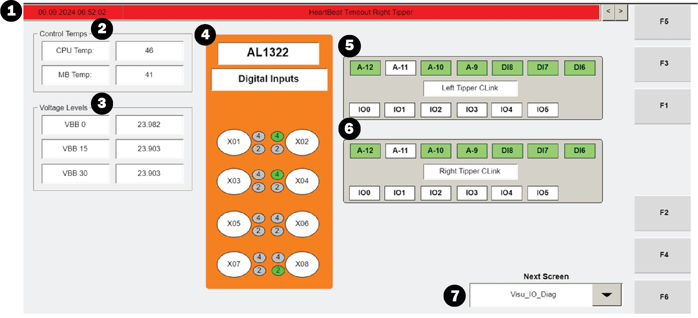

| Procedure ID | proc_verify_internal_controller_voltage_on_visu_io_diag_screen_v1 |
|---|---|
| Title | Verify Internal Controller Voltage On VISU_IO_DIAG Screen |
| Procedure Type | diagnostic |
| Primary Role | L1_support |
| Support Safe | Yes |
| Validation Status | needs_sme_review |
| Merge Status | source_finalized |
Check the Operator Station HMI VISU_IO_DIAG screen and verify whether the internal controller voltage shown in the "Voltage Levels" section matches the documented expected value of 24 V.
Use this procedure when troubleshooting from the Operator Station HMI and you need to verify the internal controller voltage shown on the read-only VISU_IO_DIAG screen.
Responsible role: L1_support
Instruction:
Open the VISU_IO_DIAG screen on the Operator Station HMI.
Expected result:
The VISU_IO_DIAG screen is displayed on the Operator Station HMI.
Screens / Images:

Stop or Escalate If:
Responsible role: L1_support
Instruction:
Locate the "Voltage Levels" section on the VISU_IO_DIAG screen.
Expected result:
The "Voltage Levels" section is identified on the screen.
Screens / Images:
Stop or Escalate If:
Responsible role: L1_support
Instruction:
Observe the voltage reading for the internal controller of the HMI in the "Voltage Levels" section.
Expected result:
A displayed voltage value for the HMI internal controller is visible.
Screens / Images:
Stop or Escalate If:
Responsible role: L1_support
Instruction:
Compare the displayed internal controller voltage reading to the documented expected value of 24 V.
Expected result:
You determine whether the displayed voltage matches 24 V.
Screens / Images:
Stop or Escalate If:
Responsible role: L1_support
Instruction:
Record whether the displayed voltage matches 24 V.
Expected result:
The verification result is documented as either matching or not matching 24 V.
Stop or Escalate If: